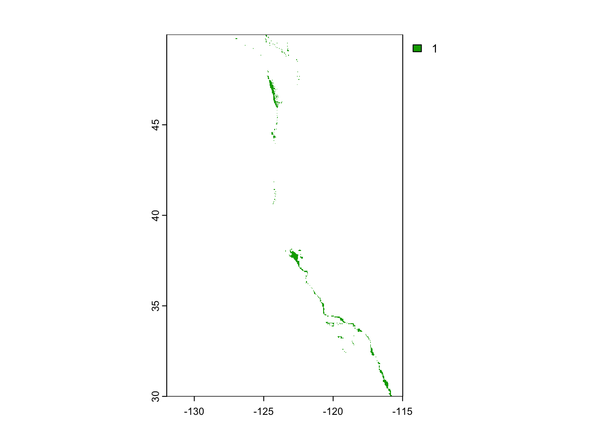

Marine aquaculture has the potential to play an important role in the global food supply as a more sustainable protein option than land-based meat production.1Gentry et al. mapped the potential for marine aquaculture globally based on multiple constraints, including ship traffic, dissolved oxygen, bottom depth .2
In this notebook, I will determine which Exclusive Economic Zones (EEZ) on the West Coast of the US are best suited to developing marine aquaculture for several species of oysters.
Based on previous research, I found that oysters needs the following conditions for optimal growth:
sea surface temperature: 11-30°C
depth: 0-70 meters below sea level
These parameters are relatively easy find for most organisms deemed suitable for commercial trade or aquaculture. At the end of my analysis, I input different parameters into the “aquaculture suitability” function that I make in order to test its capability.
I found information on species depth and temperature requirements on SeaLifeBase.
Key skills:
combining vector/raster data
resampling raster data
masking raster data
map algebra
Data
Sea Surface Temperature
In this project, I will use average annual sea surface temperature (SST) from the years 2008 to 2012 to characterize the average sea surface temperature within the region. The data I’ll be working with was originally generated from NOAA’s 5km Daily Global Satellite Sea Surface Temperature Anomaly v3.1.
I will be designating maritime boundaries using Exclusive Economic Zones off of the west coast of US from Marineregions.org.
US State Boundaries
There are a few packages in R that you can get these boundaries from (like map_data in ggplot2 and map) but I also wanted the associated USPS state codes, higher resolution geometries, and the flexibiltiy available in raw shapefile manipulation.
These are the necessary libraries for this analysis:
Code
# first, let's start with the libraries needed for this analysislibrary(tidyverse) # tidyverse supremacy :)library(here) # for reproducible file pathslibrary(janitor) # just in case we need to clean any data# for geospatial analysis and map-makinglibrary(sf)library(terra)library(patchwork)library(raster)library(ggspatial) # for plot annotationslibrary(gt) # for nicer tableslibrary(stringr)
Note: Before we begin, I’d like to clarify that I comment out or delete many of my early data exploration steps, for fear of showing “too much” data exploration and the clutter that comes along with printing the output of all of my checks, including preliminary plots, etc.. Feel free to download the .Rmd and un-comment checks and preliminary data exploration if you’re interested in seeing more of the process.
Data preparation
To start, I will load all necessary data and make sure they are projected in the coordinate reference system (CRS) EPSG:4326.
These are: our West Coast EEZ shapefile, multiple .tif files that we’ll combine as a raster stack of average annual SST from 2008-2012, a .tif of the bathymetry (depth) raster, and the US State boundaries shapefile.
While the data is too large to push to GitHub, I do have it saved in my RProject locally, so I’ll use the here package to read in the data.
Bathymetry raster
Code
# read in bathymetry raster (`depth.tif`)\bathymetry <-rast(here("data", "depth.tif")) # this data is already in EPSG:4326# st_crs(bath)# plotting check:# plot(bathymetry)
Sea Surface Temperature rasters
The SST rasters are stored as the following .tif files: - average_annual_sst_2008.tif
- average_annual_sst_2009.tif
- average_annual_sst_2010.tif
- average_annual_sst_2011.tif
- average_annual_sst_2012.tif
Because they have the same first part of their file name, and nothing else in my data folder shares that beginning, I can read them all in in one step. I’ll also combine these SST rasters into a raster stack.
Code
# read in multiple files and make a raster stack:sst_file_list <-list.files(here("data/"), # in the data folder in my current wdpattern ="average*" , # selecting all files that begin with "average"full.names =TRUE) # keep full names# combining SST rasters into a raster stack sst_stack <-rast(sst_file_list) %>% terra::project("EPSG:4326")# check to see if this step worked# plot(sst_stack) # uncomment to view
West Coast EEZ shapefile
Code
# read in the shapefile for the West Coast EEZ (`wc_regions_clean.shp`)eez <-st_read(here("data", "wc_regions_clean.shp"),quiet =TRUE) %>%st_transform(st_crs(sst_stack))# head(eez) # here we can see that the column name for region is "rgn"
US State boundaries shapefile
Code
# to give geographical context for our eez area plot, let's read in US Census state boundary data to make a basemap of west coast states and their borders:state_boundaries <-st_read(here("data", "cb_2018_us_state_20m","cb_2018_us_state_20m.shp"),quiet =TRUE) %>% janitor::clean_names()west_coast <- state_boundaries %>%filter(stusps %in%c("WA", "OR", "CA", "NV")) %>% sf::st_transform(crs =st_crs(sst_stack))# plotting check# plot(west_coast)# st_crs(west_coast)
CRS check:
Code
cat("Do all CRS match?:", st_crs(sst_stack) ==st_crs(eez) &st_crs(eez) ==st_crs(bathymetry) &st_crs(bathymetry) ==st_crs(west_coast))
Do all CRS match?: TRUE
Data Processing
Next, we need process the SST and depth data so that they can be combined. In this case the SST and depth data have slightly different resolutions, extents, and positions. We don’t want to change the underlying depth data, so we will need to resample to match the SST data using the nearest neighbor approach.
Find mean SST, convert to Celsius
First, we’ll find the mean SST from 2008-2012 in Celsius (it’s currently in Kelvin, so we’ll need to convert it).
Code
# finding the mean SST from 2008-2012# head(sst_stack)# we can see that our data currently looks like a dataframe with year as columns and SST values as rows per column, so to find the mean across all years we can take the mean using a SpatRaster equivalent of summarize() for each column, and find the mean of that.# after some quick research, I found a function in terra called "app" to apply mathematical functions to objects of class SpatRaster. You can also just use summarize() from terra, using the mean() function within thatsst_mean <- sst_stack %>% terra::mean() # # checking to see if this method worked# sst_mean # we want many values here, because we want the mean of each cell# converting from Kelvin to Celsiussst_mean_c <- sst_mean -273.15# checking to see if the SpatRaster object was properly updated# sst_mean_k # it was!
Crop, resample
Then, we’ll crop depth raster to match the extent of the SST raster
- note: the resolutions of the SST and depth data do not match
To resolve this resolution issue, we’ll resample the depth data to match the resolution of the SST data using the nearest neighbor approach. This is a specific string we can pass into the “method” argument within terra’s resample().
Finally, we’ll check that the depth and SST match in resolution, extent, and coordinate reference system by seeing if the rasters can be stacked (using terra’s rast())
Code
# crop depth raster to match the extent of the SST rasterdepth_cropped <- terra::crop(x = bathymetry, y = sst_mean_c) # using the crop method from terra# resampling depth data to match the resolution of the SST data using the nearest neighbor approach using resample() from terradepth_resampled <- terra::resample(depth_cropped, # resampling our cropped raster sst_mean_c, # to match the resolution of the SST data raster stackmethod ="near") # specifying nearest neighbors method# checking to see if this step worked, meaning the resolution, extent and CRS all match (if this is the case, they can be stacked!)depth_sst_stack <- terra::rast(c(sst_mean_c, depth_resampled))# this step worked, which means that the extents, resolution, and CRS all match. # we can also check these factors individually:# using cat() so we can print with line breakscat("Do the extents match?:", terra::ext(sst_mean_c) == terra::ext(depth_resampled),"\nDo the resolutions match?:", ggplot2::resolution(sst_mean_c) == ggplot2::resolution(depth_resampled), # using ggplot's resolution() function here to computer the resolution of a numeric vector"\nDo the CRS match?:", sf::st_crs(sst_mean_c) == sf::st_crs(depth_resampled) )
Do the extents match?: TRUE
Do the resolutions match?: TRUE
Do the CRS match?: TRUE
Finding suitable locations
In order to find suitable locations for marine aquaculture, we’ll need to find locations that are suitable in terms of both SST and depth.
Classification
First, we’ll reclassify SST and depth data into locations that are suitable for oysters by setting suitable values to 1 and unsuitable values to NA
remember, the suitability parameters we found earlier were: - optimal growth: - sea surface temperature: 11-30°C - depth: 0-70 meters below sea level
We can do this by making a reclassification matrix with the suitability parameters for depth and temperature, and then apply those matrices using terra’s classify().
Code
# reclassify erroneous values as NA# sst reclassification matrixsst_reclass_matrix <-matrix(c(-Inf, 11, NA, # values below 11 degrees = NA11, 30, 1, # values between 11 and 30 = 1 (suitable)30, Inf, NA), # values above 30 degrees = NAncol =3, byrow =TRUE)depth_reclass_matrix <-matrix(c(-Inf, -70, NA, # values below -70 meters = NA (unsuitable)-70, 0, 1, # values from 0 to 70 = 1 (suitable)0, Inf, NA), # values over 70 meters below sea level = NA (unsuitable)ncol =3,byrow =TRUE)# applying reclassification matrices to reclassify sst and depth rasterssuitable_sst <-classify(sst_mean_c, rcl = sst_reclass_matrix)suitable_depth <-classify(depth_resampled, rcl = depth_reclass_matrix)
Application
Now that we have our classifications for suitable conditions, we can make a function that will yield outputs of “1” for suitable locations and “NA” for areas that do not meet one or both of the suitability conditions. The output of our previous step (applying suitability reclassification matrices) defined each cell as either 1 (suitable) or NA (not suitable). We can use this to our advantage – 1 * 1 is 1, and 1 * NA will result in an NA value.
We’ll first define that multiplication step as a function, and then use the lapp() function to multiply cell values using that suitability function to get an end result of finding locations that are suitable for both the depth and temperature conditions for our oysters.
Code
# creating function to multiply cell values (copying example in lapp() documentation)suitable_function <-function(sst, depth) {return(sst * depth) # 1 * NA = NA, 1 * 1 = 1 ((we want 1s where both conditions for suitability are met))}# applying our function to our reclassified rasters to find suitable locationssuitable_locations <-lapp(c(suitable_sst, suitable_depth), fun = suitable_function)# preliminary plot to see suitability map plot(suitable_locations)

We can see that in the default legend in this plot, cells that fit both conditions of suitability are values of “1” and unsuitable values are NA. To select the suitable cells, we can select values that are equal to 1.
Determining the most suitable EEZ
We want to determine the total suitable area within each EEZ in order to rank zones by priority. To do so, we need to find the total area of suitable locations within each EEZ.
We’ll do this through the following steps: 1. Select suitable cells within West Coast EEZs
Find area of grid cells (using `terra::cellSize()``)
Find the total suitable area within each EEZ
rasterize the EEZ data
find total suitable area using terra::zonal())
Code
# let's check out what we're working with here# plot(eez, max.plot = 1) # (uncomment to see)# right now, everything in our EEZ shapefile is in blocks according to each region # we can select suitable cells within the West Coast (region) EEZs by# compute the area covered by individual raster cells in our suitable areas raster (where both suitability criteria were met, values == 1)suitable_areas <-cellSize(x = suitable_locations, # get the area of cells in this SpatRastermask =TRUE, # NA cells in x -> NA in outputunit ="km", # based on eez metadata and CRS documentation, appropriate unit is kilometerstransform =TRUE) # planar CRS data are transformed # to lon/lat for accuracy# We'll then rasterize eez dataeez_raster <- terra::rasterize(x = eez, # transfer values associated with the geometries of this vector datay = suitable_locations, # to this rasterfield ="rgn")# checking to see if this step worked# class(eez_raster)# plot(eez_raster) # it did! note that the x and y axes look like those of our suitable_locations plot earlier# using terra's zonal function to compute the total suitable area within each EEZ suitable_areas <- terra::zonal(x = suitable_areas, z = eez_raster, # zones fun ="sum", # adding up total suitable areasna.rm =TRUE# removing NA values )# note: the class() of suitable_areas is now a data.frame, with region ("rgn") as one column and total suitable area ("area") as another column: suitable_areas %>%gt()
rgn
area
Central California
4069.5671
Northern California
178.0246
Oregon
1074.2562
Southern California
3508.1870
Washington
2378.2758
It looks like Central California has the highest maximum area, followed by Southern California and then Washington. However, this is not indicative of the percent of the total area in each EEZ that is suitable for oyster aquaculture.
Now that we have the total suitable area in each zone, we can find the percentage of total area of each zone that is suitable by joining the suitable area by region (column rgn) onto the EEZ vector data (pre-rasterized).
Here, I’ll use dplyr’s left_join(), and mutate to add a column called pct_suitable_area.
Code
# to find the percentage of each zone that's suitable, we'll left-join the suitable area by region onto the EEZ vector data, then make a new percentage area column by using the "area_km2" column from the original EEZ data and the new total suitable area per region data from our suitable_areas dataframepct_suitable_eez <-left_join(eez, suitable_areas,by ="rgn") %>%# both dataframes share this columnmutate(pct_suitable_area = ((area / area_km2) *100) )# check#plot(pct_suitable_eez)#pct_suitable_eez$pct_suitable_area
Visualize results
Now that we have results, we need to present them!
To do this, I will create the following maps:
total suitable area by region
percent suitable area by region
To give geographical context for our EEZ area plot, I’ll find the centroid of each of the previously defined West Coast states and label them with their 2-letter USPS code (state abbreviation) to make a comprehensive base-map of West Coast states and their borders:
# making centroidsstate_centroids <-st_centroid(west_coast)# making total suitable area plottotal_suitable_area_plot <-ggplot() +geom_sf(data = west_coast, # plotting base map layerfill ="gainsboro") +geom_sf_text(data = state_centroids, aes(label = stusps), # adding state abbreviations at centroidssize =2.5) +geom_sf(data = pct_suitable_eez,aes(fill = area)) +scale_fill_distiller(palette ="Blues",direction =1) +# reverse default color ordercoord_sf() +# to follow our coordinate system, not Cartesian ggspatial::annotation_scale(plot_unit ="km",location ="bl", # bottom left cornerpad_y =unit(0.01, "cm")) +# from function documentation, used to move the bar closer to the y-axisannotation_north_arrow(location ="tr",style = ggspatial::north_arrow_nautical(fill =c("grey40", "white"),line_col ="grey20")) +# custom themetheme_minimal() +# update axes labels, titleslabs(title ="Total Area Suitable for Oyster Aquaculture",subtitle ="by West Coast Exclusive Economic Zones (EEZs)",fill =bquote("Suitable Area (km"^{2}~")" ),x ="Longitude",y ="Latitude") +theme(plot.title.position ="plot",plot.title =element_text(hjust =0.95, vjust =1,family ="Futura",face ="bold",size =16),plot.subtitle =element_text(family ="Futura",face ="plain",size =10,vjust =0.5),legend.box.margin =margin(l =0.5, unit ="cm"),legend.title =element_text(family ="Futura",hjust =-1,vjust =0.5), # these arguments don't seem to work on longer titles...legend.title.align =0.5,# legend.axis.text.x =element_text(angle =45,vjust =0.75,hjust =0.9),axis.title.x =element_text(vjust =-0.5, family ="Futura"),axis.title.y =element_text(family ="Futura") )# show plottotal_suitable_area_plot
pct_suitable_plot <-ggplot() +geom_sf(data = west_coast,fill ="gainsboro") +geom_sf_text(data = state_centroids,aes(label = stusps),size =2.5) +geom_sf(data = pct_suitable_eez,aes(fill = pct_suitable_area)) +# scale_fill_viridis_c(direction = -1) +scale_fill_distiller(palette ="Blues", direction =1,name = stringr::str_wrap("Percentage suitable area (%)",width =20)#,# guide = guide_colourbar(title.position = "top") ) +# reverse default color ordercoord_sf() +# to follow our coordinate system, not cartesian ggspatial::annotation_scale(plot_unit ="km",location ="bl", # bottom left cornerpad_y =unit(0.01, "cm") # from function documentation, used to move the bar closer to the y-axis ) +annotation_north_arrow(location ="tr",pad_y =unit(0.00, "cm"),pad_x =unit(0.00, "cm"),height =unit(1.5, "cm"),width =unit(1.5, "cm"),style = ggspatial::north_arrow_nautical(fill =c("grey40", "white"),line_col ="grey20", text_size =8,line_width =0.5 ) ) +theme_minimal() +labs(title ="Percentage Area Suitable for Oyster Aquaculture",subtitle ="by West Coast Exclusive Economic Zones (EEZs)",# using bquote() for mathematical notation # fill =("Percentage suitable area (%)"),x ="Longitude",y ="Latitude") +theme(plot.title.position ="plot",plot.title =element_text(hjust =0.45,vjust =1,family ="Futura",face ="bold",size =16 ),plot.subtitle =element_text(family ="Futura",face ="plain",size =10,vjust =0.5), legend.box.margin =margin(l =0.5, unit ="cm"),legend.title =element_text(hjust =-0.5, family ="Futura"),legend.title.align =0.5, # no matter how hard I tried, I couldn't get the legend key to be center-aligned under the legend title.# legend.legend.text =element_text(family ="Futura"),axis.text.x =element_text(angle =45,vjust =0.75,hjust =0.9#, family = "Futura" ),axis.title.x =element_text(vjust =-0.75, family ="Futura"),axis.title.y =element_text(family ="Futura") )# show plotpct_suitable_plot
Note: I followed this example on how to force the center alignment for my legend title.
Broadening workflow
Now that we’ve worked through the solution for one group of species, let’s update our workflow to work for other species.
Here, we’ll create a function that would allow us to reproduce your results for other species. T
his function will be able to do the following:
accept temperature and depth ranges and species name as inputs
create maps of total suitable area and percent suitable area per EEZ with the species name in the title
Code
# we don't need to repeat our data cleaning and preparation steps, so we can just jump right into finding suitable locations and work from theresuitability_mapper <-function(min_temp, max_temp, min_depth, max_depth, species_name) {# ======= Find suitable locations =======# ------ Classification Matrices ------ ## make classification matrices for the specified species' ideal parameters:## reclassification matrix for suitable temperatures sst_matrix <-matrix(c(-Inf, min_temp, NA, min_temp, max_temp, 1, max_temp, Inf, NA), ncol =3, byrow =TRUE)## reclassification matrix for suitable depths depth_matrix <-matrix(c(-Inf, min_depth, NA, min_depth, max_depth, 1, max_depth, Inf, NA), ncol =3, byrow =TRUE)# ------ Reclassify ----- ## apply reclassification matrices to reclassify temperature (sst) raster... suitable_temps <-classify(sst_mean_c, # this is the mean sst data converted to Celsius we made earlierrcl = sst_matrix)## ...and depth raster suitable_depths <-classify(depth_resampled, # our resampled bathymetry datarcl = depth_matrix)# creating a nested function to multiply cell values suitable_function <-function(sst, depth) {return(sst * depth) }## apply our function to our reclassified rasters to find suitable locations suitable_locations <<-lapp(c(suitable_temps, suitable_depth), fun = suitable_function)# ====== Calculate suitable area ======# compute the area covered by individual raster cells in our suitable areas raster (where both suitability criteria were met, values == 1) suitable_areas <-cellSize(x = suitable_locations, mask =TRUE, unit ="km", transform =TRUE) # rasterize eez data eez_raster <- terra::rasterize(x = eez, # our original eez datay = suitable_locations,field ="rgn") # ------ Find total suitable area ----- # # calculate total suitable area within each EEZ suitable_areas <- terra::zonal(x = suitable_areas, z = eez_raster, # rasterized eez data fun ="sum", # adding up total suitable areasna.rm =TRUE) # removing NA values# ------ Find suitable area percentage ----- # # find the percentage of each env. economic zone that's suitable by left-joining the 'suitable areas by region' onto the EEZ vector data... pct_suitable_eez <<-left_join(eez, suitable_areas,by ="rgn") %>%# ...and make a percentage area column by using the eez "area_km2" column and the new total suitable "area" per region column from suitable_areasmutate(pct_suitable_area = ((area / area_km2) *100) ) # multiplying by 100 to get percentage# ======== Plot =========# now take this new sf dataframe and plot! # ------ Plot total suitable area in each EEZ ------ # total_suitable_area_plot <-ggplot() +# add basemap layer of West coast state Boundariesgeom_sf(data = west_coast, # west coast state boundaries from earlierfill ="gainsboro") +geom_sf_text(data = state_centroids,aes(label = stusps),size =2.5) +# add total suitable area map layergeom_sf(data = pct_suitable_eez,aes(fill = area)) +# customize total area color palettescale_fill_distiller(palette ="Blues", direction =1) +# follow our coordinate system, not Cartesiancoord_sf() +# add scale bar ggspatial::annotation_scale(plot_unit ="km",location ="bl",pad_y =unit(0.01, "cm")) +# add compass roseannotation_north_arrow(location ="tr",height =unit(0.6, "cm"),width =unit(0.6, "cm"),pad_y =unit(0.1, "cm"),pad_x =unit(0.1, "cm"),style = ggspatial::north_arrow_nautical(fill =c("grey40", "white"),line_col ="grey20",text_size =5)) +# custom themetheme_minimal() +# update axes labels, titleslabs(title =paste("Suitable Area for", species_name, "Aquaculture"),subtitle ="by West Coast Exclusive Economic Zones (EEZs)",fill =bquote("Total suitable area (km"^{2}~")" ),x ="Longitude",y ="Latitude") +theme(plot.title.position ="plot",plot.title =element_text(hjust =0.05,vjust =1,family ="Futura",face ="bold",size =16),plot.subtitle =element_text(family ="Futura",face ="plain",size =10,hjust =0.35,vjust =0.5),legend.box.margin =margin(l =0.5, unit ="cm"),legend.title =element_text(family ="Futura"),legend.title.align =0.5,axis.text.x =element_text(angle =45,vjust =0.75,hjust =0.9),axis.title.x =element_text(vjust =-0.5,family ="Futura"),axis.title.y =element_text(family ="Futura"))# ------ Plot percentage suitable area in each EEZ ------ # percentage_area_plot <-ggplot() +# add basemap layer of West coast state Boundariesgeom_sf(data = west_coast, # west coast state boundaries from earlierfill ="gainsboro") +geom_sf_text(data = state_centroids, aes(label = stusps),size =2.5) +geom_sf(data = pct_suitable_eez,aes(fill = pct_suitable_area)) +scale_fill_distiller(palette ="Blues",direction =1,name = stringr::str_wrap("Percentage suitable area (%)",width =20),guide =guide_colourbar(title.position ="top")) +# follow our coordinate system, not Cartesiancoord_sf() +# add scale bar ggspatial::annotation_scale(plot_unit ="km",location ="bl",pad_y =unit(0.01, "cm")) +# add compass roseannotation_north_arrow(location ="tr",pad_y =unit(0.00, "cm"),pad_x =unit(0.00, "cm"),style = ggspatial::north_arrow_nautical(fill =c("grey40", "white"),line_col ="grey20",text_size =0.5)) +theme_minimal() +labs(title ="",subtitle ="",# using bquote() for mathematical notationfill =bquote("Percent suitable Area (% km"^{2}~")"),x ="Longitude",y ="Latitude") +theme(legend.box.margin =margin(l =0.5, unit ="cm"),legend.title =element_text(family ="Futura", ),legend.title.align =0.5,axis.text.x =element_text(angle =45,vjust =0.75,hjust =0.9),axis.title.x =element_text(vjust =-0.5, family ="Futura"),axis.title.y =element_text(family ="Futura"))# returning combined plot (one over the other ) total_suitable_area_plot / percentage_area_plot}# testing our function on general Oyster aquaculture suitability conditions:suitability_mapper(min_temp =11, max_temp =30,min_depth =0, max_depth =70, species_name ="Oyster")
To test it out using different input parameters, we’ll run the function for a couple of relatively plausible species: Dungeness Crabs and Peruvian Anchovetas!
Feel free to download this notebook and run the function on another species of your choice :). You can find information on species depth and temperature requirements on SeaLifeBase. Remember, we are thinking about the potential for marine aquaculture, so these species should have some reasonable potential for commercial consumption.
Hall, S. J., Delaporte, A., Phillips, M. J., Beveridge, M. & O’Keefe, M. Blue Frontiers: Managing the Environmental Costs of Aquaculture (The WorldFish Center, Penang, Malaysia, 2011).↩︎
Gentry, R. R., Froehlich, H. E., Grimm, D., Kareiva, P., Parke, M., Rust, M., Gaines, S. D., & Halpern, B. S. Mapping the global potential for marine aquaculture. Nature Ecology & Evolution, 1, 1317-1324 (2017).↩︎
GEBCO Compilation Group (2022) GEBCO_2022 Grid (doi:10.5285/e0f0bb80-ab44-2739-e053-6c86abc0289c).↩︎